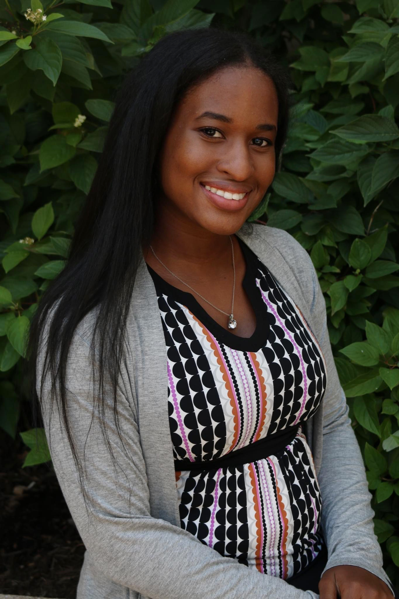

My name is Donnae Ashford. I was born in Chicago, IL. I'm a wife, and a mother of three. And a future tech geek! I am very much enjoying my experience being apart of Cycle 51 with i.c.stars.
I have been working in customer service since the age of 16. I've also worked in the food industry/grocery industry for places like Mariano' and Jamba Juice.
I ended up with these hobbies. Because as a kid I was very shy. So, I acquired these hobbies to given me comfort in uncertain times. Because if I couldn't lean on anyone else, at least I know that I had my talents.